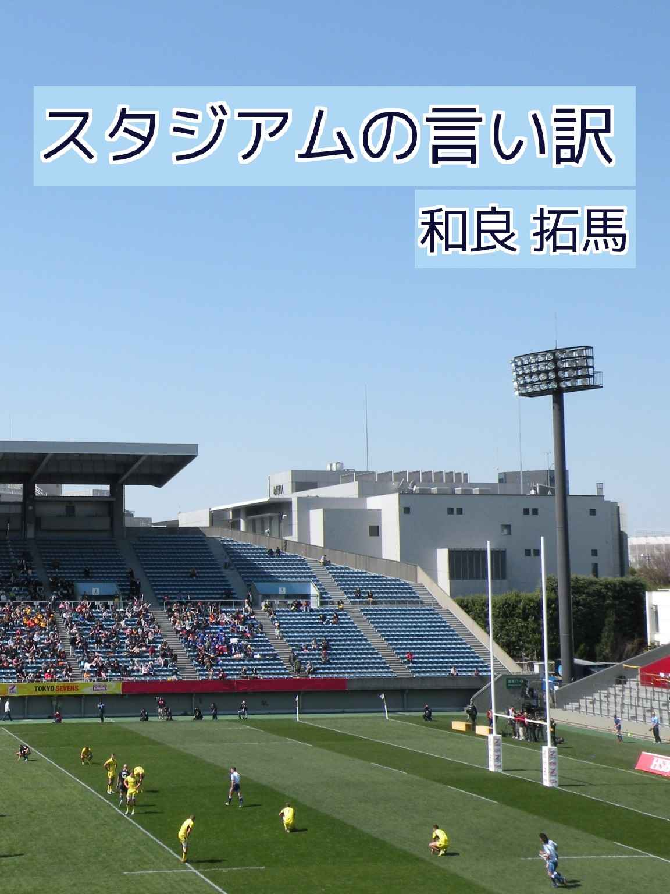
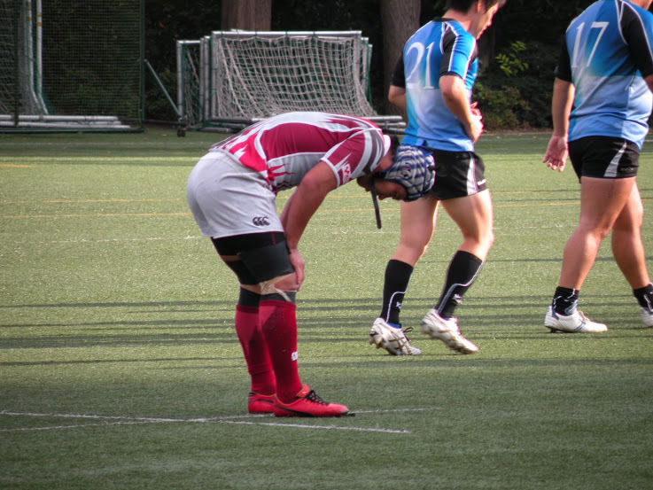
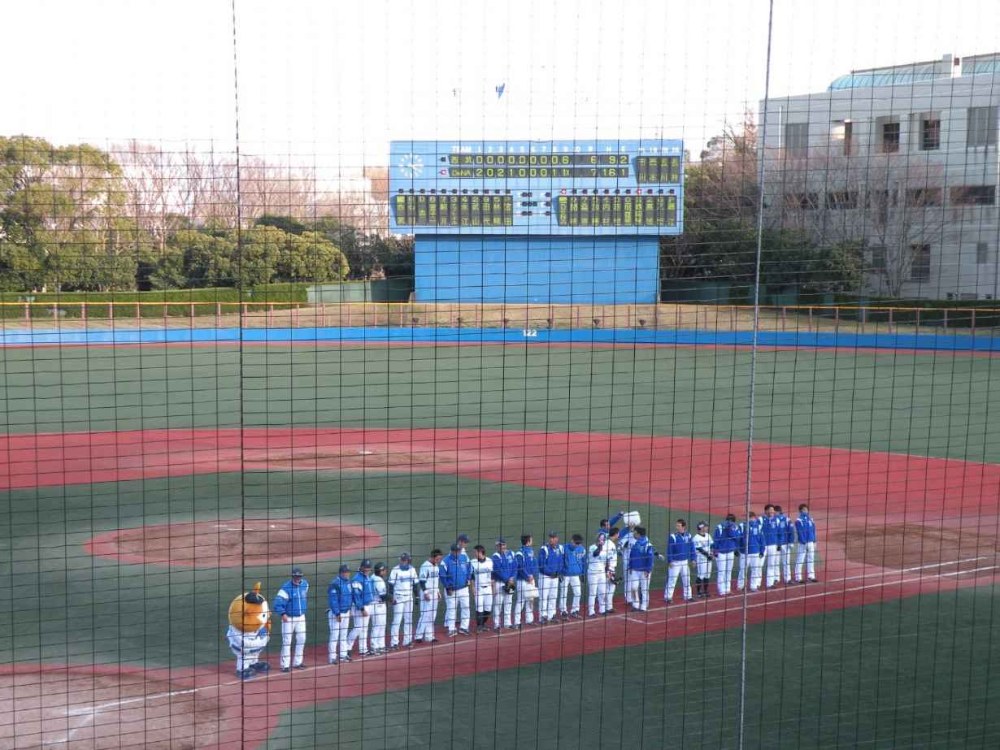
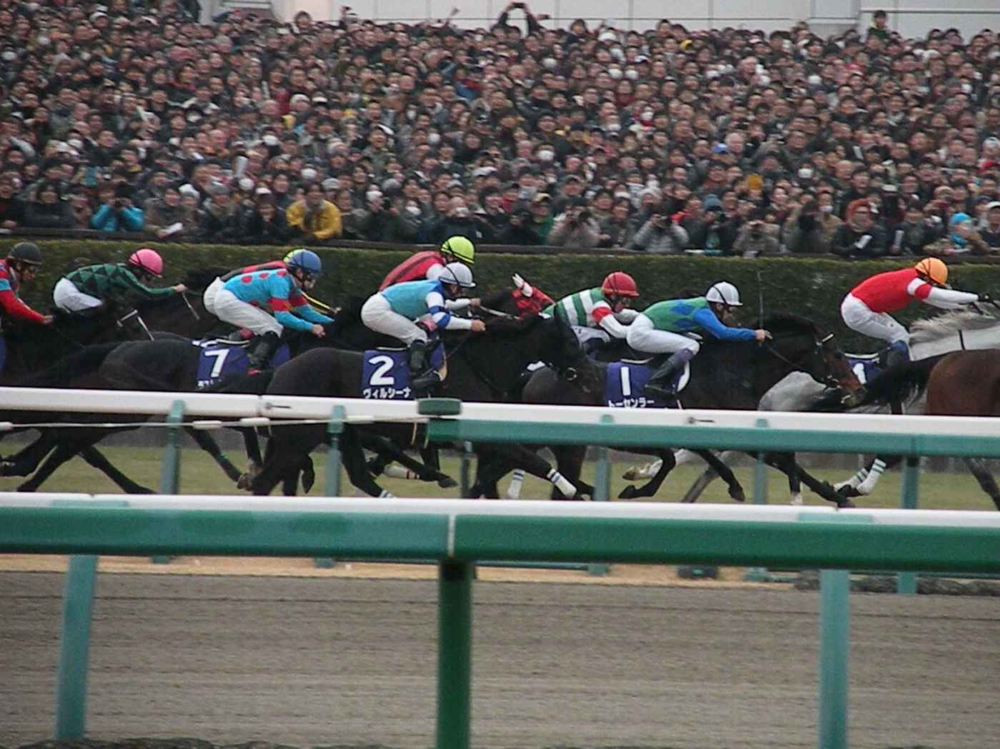

| スタジアムの言い訳 | |
| 和良 拓馬 | |
| (2015) | |


釜石を破った横河武蔵野って、本当に強いの？
トップリーグの昇格争いは三菱重工相模原ダイナボアーズと釜石シーウェイブスで順当だろうと思われた、２０１３年のトップイースト（ラグビートップリーグの下に属する２部リーグ）に思わぬ事態が発生している。
その立役者が横河武蔵野アトラスターズだ。１９４６年創部の歴史あるラグビー部であり、２００８年には初めてトップリーグに昇格した古豪である。しかし、このシーズン限りで呆気なくトップイーストに降格。以降は強化縮小による戦力の放出や暴言事件によるリーグ戦辞退など、不遇の時を過ごしていた。
そんな横河武蔵野に、再び光が差してきた！
１週間前に行われた釜石戦において、横河武蔵野が24 −７で勝利という番狂わせを起こしたのだ。前年久々に試合を見たが、シンプルでミスが少なく、かつ激しいプレーを繰り返す姿は非常に好印象だったと記憶している。とは言え、前年と今年で選手補強や練習環境などで大きな変化は無い。
そこで冒頭の疑問にぶつかった訳である。
トップイースト第７節・横河武蔵野対日本ＩＢＭビッグブルーとの試合を観に、三鷹市にある横河電機グラウンドに足を運んだ。この組み合わせはなかなか面白いと、実は前々から思っていた。相手の日本ＩＢＭも２００６年にトップリーグから降格した後、強化縮小の憂き目に合っている。取り巻くシチュエーションは不思議と、横河武蔵野と似ているところがあったのだ。
日本ＩＢＭのブースで頂いたパンフレットを開いたところ、こちらの総部員数は24 名。ルール上、毎試合の登録メンバーは最大23 名。そして、この試合での登録メンバーは22 名。要するに、ギリギリの選手数である。移籍組の選手も多いが、経歴にはちょっとした「苦労人」感も漂う。ちなみに、後で知ったことなのだが背番号18 を付けてプレーをしていた山田晋司は、このチームの監督も兼任している。
事前の予想に反し、試合は日本ＩＢＭのペースで進んでいった。序盤から横河武蔵野が攻撃で畳みかけていくものの、粘り強いディフェンスの前にテンポが掴めない。日本ＩＢＭがボールを奪取すると、スタンドオフ・日永田泰佑にパス。日永田がすかさずハイパントを放つと、攻撃陣が待ち構えていたところにしっかりとボールが落ちていった。戸惑う横河武蔵野の選手たちが目立ったことを考えると、日本ＩＢＭの戦略通りと言えるだろう。
前半終わってスコアは17 −５。横河武蔵野リードで折り返したのだが、アウェイチームの健闘が印象に残った。ただし、日本ＩＢＭは展開攻撃時の連携が悪く、中々トライに結びつかなかったのは痛かった。
後半も暫くは日本ＩＢＭペース。激しいブレイクダウンとカウンターからチャンスをつくろうと試みる。そして、後半６分に相手のパスをインターセプトした畠山健がトライを決める。横河武蔵野の展開方法を完全に読み切っていた素晴らしいプレーだった。スコアは遂に５点差にまで縮まった。
......と、ジャイアントキリングの予感は高まったのだが、それが続いたのは結局ここまで。フィットネスとゲームメイキングで優る横河武蔵野が次第に日本ＩＢＭを圧倒。最終的に44 −12 でこの試合の幕は下りた。
横河武蔵野の展開攻撃はこの日も「シンプル・イズ・ベスト」を体現していた。順目に展開を繰り返し、少ない手数で数的優位をつくる。日本ＩＢＭがディフェンスラインを高めに設定してきたこともありテンポが出るまで時間がかかったが、フォワード戦で優位に立てた後半10 分以降の話は別だった。フォワードがボールをキープし、この日３トライを挙げたウイングの西真やスクラムハーフの那須光といったスピードスターに、上手くパスを回せば見応えのある攻撃に変貌する。この試合は個の力量差で押しきった感はあるが、不利な局面から立て直して盛り返せるのは、やはり土台がしっかりしているからだろう。
トップリーグ降格後、大駒と呼べる選手は少なくなったが、大学時代に「好素材」と呼ばれた選手をしっかり育てて一人前にしている。そして、彼らの特徴に合うラグビーを戦術に落とし込み、ミス無く試合で遂行する。
ともすれば、トップリーグのチームでも、これを成し遂げているのは少ないのかもしれない。ムリ、ムラ、ムダの無い現実的なラグビーが、思わぬ上昇気流に乗って昇格戦線に挑戦する。夢のある話だと思う。
でも、今日は横河武蔵野を苦しめ続けた日本ＩＢＭの戦いぶりを、大きく称賛したい。圧倒的に劣る資源の中、ハイパントによる陣地獲得とボールの争奪戦でひたすら活路を見出そうとしていた。
特にサードローの選手たち------プロップからコンバートされた佐藤大作、急きょ現役復帰した高聡伸、バイスキャプテンの下瀬央輔------は最後まで痛いプレーを嫌うこと無かった。最近、「こういうタイプの日本人選手はいないなあ」と思っていたが、２部リーグにいた！ ......と声を大にして言いたい。
敗者は、結果的に無力だった。
だが、決して無抵抗でも無気力でもなかった。
だからこそ、胸打たれるものがあった。
先が見えない暗闇の中にいたとしても、ラガーマンが抱くべき熱源は失われていない。生き続ける術を探し、必死にもがき続ける彼らの生き様は、もっと多くの人々に知られるべきだ。そう思うに相応しいゲームだった。

ゲームを観たあとは、どうしても「一言付け加えたい衝動」が出てくる。
今日の試合は負けてしまった。でも、○○は頑張っていた、審判のジャッジが曖昧だった、監督の采配ミスがあった、天気が良ければ展開が違った------という具合に、色々な理由付けをしてしまう。言い訳をしたところで試合結果は変わらないのだが、不可抗力に対して自分自身を納得させるために、今日も適度に続けるのみである。
言い訳をする時は、決して「負け試合のあと」だけという訳では無い。１つ例を示そう。
２０１４年３月21 日、横浜ＤｅＮＡベイスターズのファームチームがイースタン・リーグのホーム開幕戦を横須賀スタジアムで迎えた。対戦相手は埼玉西武ライオンズである。
試合は同点で迎えた９回裏、埼玉西武の４人目のピッチャー・宮田和希が１アウト満塁のピンチをつくり、打席には代打の靍 岡 賢二郎。力んだ宮田のボールはキャッチャーの頭上を超え、三塁ランナーは悠々とホームイン。逆転サヨナラ勝ちで横浜ＤｅＮＡが白星を挙げた。
......結末だけ書けば「何だ、横浜ＤｅＮＡの逆転サヨナラで盛り上がった試合じゃないのか？」と思うだろう。言い訳する要素はどこにも無いはずだ。
しかし、この試合は８回裏終了の時点で横浜ＤｅＮＡが６点リードしていると知ったら、話は別だと理解していただけるだろうか。
☆
ファンの期待に応えるべく、序盤から横浜ＤｅＮＡの選手たちは奮闘していた。攻撃陣は往年のマシンガン打線を彷彿とさせる連打で得点を重ねる。投手陣は先発の高崎健太郎から菊地和正、大原慎二へと継投し８回を２安打無失点。試合後に知ったことだが、埼玉西武のファームチームでは風邪が流行っており、スタメンを組むのも一苦労だったとのこと。流石にこのワンサイドゲームも致し方が無いか。
８回裏にダメ押しの６点目を横浜が奪うと、埼玉西武側のスタンドからは観客が帰り始めていた。
「もう試合は決まったな」
久々に終始穏やかな気持ちでゲームを観終えることが出来そうだ。そう、その時はそう疑っていなかったのだが......。
９回表、マウンドには藤江均が上がった。１軍でも実績があり、本来ならばファームに居てはいけない選手だ。まあ、ここはしっかり３人で抑えてくれるだろう。今日の登板は１軍へのステップアップである。
【９回表 埼玉西武ライオンズの攻撃】
２番 ＤＨ 森 センター前ヒット
３番 ショート 金子 レフト前ツーベース
４番 レフト 駒月 サードゴロ その間に森が返り１点が入る。
......まあ、少し気が緩んで点が入ってしまうのは仕方が無い。焦らず投げれば、今日の埼玉西武打線は抑えられる。
５番 ファースト アブレイユ ライト前ヒット
６番 セカンド 永江 インフィールドヒット
７番 キャッチャー 武山 ピッチャーゴロ ２アウトランナー満塁
一体全体どうなっているのだ？ 正直、藤江の投球は不安定だった。ボールが先行し、何とか入ったストライクは殆ど痛打に変わっていた。
スタンドのファンはまさかの展開にどよめき、次第に不安に襲われている。でも、２アウトじゃないか。あと一人我慢すれば良いのだ。
８番 ライト 田代 センター前ヒット ２点追加
９番 サード 林崎 レフトへの２ベースヒット １点追加
１番 センター 石川 センター前ヒット ２点追加
最悪の事態とは、案外簡単に訪れるものである。６−６の同点。果たして観客の中に、こんな未来を描けた奴はいるのだろうか？
マウンドには未だに藤江が立っていた。大村巌監督は非常事態でも全く動かない。
「ふざけんな！ ベイスターズは一体どうなっているんだ！」
「うるさい！ ベイスターズは毎回こんなゲームをしているんだから我慢しろ！」
救いようのない展開に、救いようのない野次が飛ぶ。
埼玉西武の次のバッターは森友哉。気が付いたら打者一巡の猛攻だった。
ドラフト１位で指名された期待の高卒ルーキーは、藤江の甘いボールを見逃さず、一気に振りぬいた。左中間に大きな、大きな弧が描かれていく------
２番 ＤＨ 森 レフトフライ ３アウトチェンジ
大飛球を難しい姿勢でキャッチしたのは桑原将志だった。ファインプレーに対する賞賛と、藤江に対する罵倒が入り混じる中、横浜ＤｅＮＡは予定外の９回裏の攻撃を迎える準備を始めていた。僕は疲れと緊張のあまり、観客席でぐったりうな垂れてしまった。
☆
何はともあれ、横浜ＤｅＮＡは無事にホーム開幕戦を勝利で終えた。安堵と若干の怒気がこもったため息が、スタジアム全体を包んでいた。勝ち試合のはずなのに、何とも不釣合いな光景だったと記憶している。
結局、２０１４年はそれ以降ファームの試合を観に行っていない。
手元の資料によると横浜ＤｅＮＡのファームチームは、イースタン・リーグにて58 勝46 敗４分の２位という好成績でシーズンを終えた。成長が期待される若手と復活を期すベテランが切磋琢磨したチームは、開幕戦の惨状からは考えられないほど成長し、ソリッドなチームになっていったという事なのだろうか。
一方の藤江はその後、１軍で16 試合に登板した。15 回１／３を投げて１勝１敗。防御率は４．70 という成績を残している。そして、横浜ＤｅＮＡから戦力外通告を受け、２０１５年からは東北楽天ゴールデンイーグルスでプレーする事になった。もちろんたった１試合で今の状況を判断してはならない。だが、１年間の時を経て変化した藤江の立ち位置は、あの９回表と繋がっているような気がするのも、現場にいた者の率直な感想である。

東中山駅から続く一本道の先に、小さな競馬場がそびえ立っていた。
物静かな大通りとは一転、場内は既に何万人もの人々でごった返していた。
場内で見るのは厳しい。人波に飲み込まれそうになりながらも、それを押し退けながら地下通りを歩き、何とか内馬場へと辿り着いた。
普段のレースとはやっぱり違う......。人生初の「有馬記念現地生観戦」は、そんな感想と共に幕が開いた。
ジャスタウェイ、ジェンティルドンナ、エピファネイアなど、Ｇ１ホルダーが多数揃った２０１４年の有馬記念。僕が選んだ「あなたの夢」は以下の３頭だった。
まずは本命、ゴールドシップ。素の力、コース実績、ローテーションなど、予想する上での各ファクターに対して、最も誠実に応えていたのがこの１頭だった。彼が勝つのは、一番ベタなストーリーと言える。
次に対抗、ラストインパクト。重賞２連勝という勢いはもちろん、前走の金鯱賞は有馬記念と相性の良いレース。この日が中山競馬場初登場となる、菱田裕二騎手（20 歳）のキャリア不足が不安視されているが、ここはポジティブに「まだビギナーズラックがある」と捉えるようにした。期待の新星が登場するという意味では、一番希望のあるストーリーと言える。
そしてもう一頭は単純に「勝って泣ける」馬を選ぼうと思った。その答えはウインバリアシオンである。
屈 腱炎 からの長期休み明けとなった前回の有馬記念。ウインバリアシオンは３歳の時と同じく、またしてもオルフェーブルの後塵に屈した。そして、彼が居なくなった２０１４年、ＧⅠ 奪取に向けての障害は無くなったかに思えた。
しかし、天皇賞（春）はレース直前で騎手変更のアクシデントもあり２着。宝塚記念こそと思ったが、不本意な６着。そしてレース後に再び、屈腱炎を負ってしまった。
半年の休養後、出走した金鯱賞は大敗。ケガ再発のリスクを背負っての出走、そして最後の直線での勢いの無さには「もう終わった馬」という烙印を押されても仕方がなかった。
だが、逆にその悪条件が僕の穴党魂に火を着けた。そもそも、ウインバリアシオンは長距離が得意な馬。同じコース、同じ距離の日経賞でも１着と２着が１回ずつ。前走は怪我明けのたたき台と考えれば、２走目に突然豹変してもおかしくはない。
何より、勝った瞬間がドラマチックで、その姿が一番泣けるのは、この馬じゃないか。
頭の中でストーリーは組み立てられた。あとは、その通りに馬たちが演じてくれるのを祈るだけである。
早めにメインレースの馬券を揃え、内馬場をうろうろしつつ、何とか第４コーナー付近のポジションを確保した。午後２時の割には寒さが堪える。ホットコーヒーも焼け石に水だった。対岸の観客席は人の姿しか見えない。
返し馬が始まると、対岸から凄まじい歓声があがった。この時点で「凄まじい歓声」とは。本番はどうなってしまうのだろうか。
第４コーナーから一歩も動かなかったが、常に心はどこかに向かおうとしていた。そわそわしながら、待ちに待った３時25 分を時計が指した。
大方の予想通りヴィルシーナがハナを主張。２番手はジャパンカップの覇者、エピファネイアがつける予想外の展開。ラストインパクトは中団の内側で他の馬に囲まれ、ゴールドシップはやや後方。その外側をウインバリアシオンがつけていた。うーん、三者の位置はベストではない。
１０００ｍを１分３秒という驚愕のスローペース。そうなると、前に居る馬が優勢となる。ラスト３ハロンでゴールドシップは「まくり」を見せてくれれば何とかなる。他の２頭はポジションを考えると厳しいのでは。勝利への期待はゴールドシップだけだった。
第３コーナーに入り、再びざわつきの音量が増していった。大型ビジョンを確認すると、白い巨体が徐々に接近してくる。予想通りまくってきたな！
そろそろ第４コーナー、僕もカメラを構える。ゴールドシップの激走の瞬間が撮影できるかもしれない。
緩やかな曲線を馬たちが駆けていく。連写モードにしてシャッターを押す。先頭からエピファネイア、ジェンティルドンナ、ラキシス、その外にゴールドシップ......。
その時、僕のファインダー越しに、大外から黄色い帽子を被った騎手と、赤と黒のメンコを付けた馬が凄いスピードで通り過ぎた。
ウインバリアシオンだ！ まさか！？
ウイン、行け！
ラストの直線で彼の名前を叫ぶことになるとは、レース前は思ってもいなかった。
最後のカーブで見せたあのスピードは、単なる錯覚だったのか、それとも僕の強い思いこみだったのか。ウインバリアシオンはその後ずるずると後退し、12 位でレースを終えた。またしても復活はならなかった。
しかし、僕が考えたストーリーの中で最も「願いが叶って欲しい」と、あの時思ったのがウインバリアシオンだった。僅か２分半の間に、配当金やカタルシスとはまた異なる理由で、急に彼への思い入れが増していった。
そして、思う。ウインバリアシオンは怪我再発とのリスクと戦いながら走っている。勝利のために、いや勝利を得る前に全てを失う可能性もある。つまり、あの一瞬の煌めきは１つのチャンスも無駄にしたくないという、彼なり意地だったのだ。
その意気込みを本当に考えた上で、僕は馬券を買っていたのだろうか。
今、僕たちが生きる世界は、何かを賭けなければ何かを得られない仕組みになっている。だからこそ、ウインバリアシオンの賭ける思いをリスペクトしながら、この先のＧⅠ レースも彼の馬券を買い続けたいと考えている。
・存在の証明
＜ 開催日＞ ２０１３年11 月10 日 13 時キックオフ
＜ 競技場＞ 横河電機グラウンド
＜ 試合結果＞ 横河武蔵野アトラスターズ44 （７Ｔ ３Ｇ １ＰＧ）−12 （２Ｔ１Ｇ） 日本ＩＢＭビッグブルー
・始まりの終わり
＜ 開催日＞ ２０１４年３月21 日 13 時プレイボール
＜ 競技場＞ 横須賀スタジアム
＜ 試合結果＞ 横浜ＤｅＮＡベイスターズ ７×−６ 埼玉西武ライオンズ
（勝）藤江 （敗）宮田
・ギブ・ミー・ア・チャンス
＜ レース名＞ 第59 回有馬記念（ＧⅠ ）
＜ 開催日＞ ２０１４年12 月28 日 中山10 Ｒ 15 時25 分発走
＜ コース＞ 中山競馬場 芝２５００メートル 馬場： 良
１着： ④ ジェンティルドンナ（牝５歳／戸崎）
２着： ⑥ トゥザワールド（牡３歳／Ｗ.ビュイック）
３着： ⑭ ゴールドシップ（牡５歳／岩田）
＝＝＝＝＝＝＝＝＝＝＝＝＝＝＝＝＝＝＝＝
12 着： ⑨ ウインバリアシオン（牡６歳／藤岡康）
※上から着順・枠番・馬名、括弧内は年齢・騎手
この度は「スタジアムの言い訳」をダウンロードして下さり、誠にありがとうございました。
スポーツエッセイ集は「ウマが逢う話」に続き第２弾となります。執筆に励み、セルフパブリッシングというかたちで世に出していく中で、どのようにすれば多くの方にスポーツの「物語性」や「多面的な面白さ」を伝えられるのだろう？ という問題意識に辿り着きました。業界内のアプローチ方法として、例えば０円セールや無料サンプル集というものを採用している方も多いのですが、私の場合は短い文章を多く生み出すスタイル。「じゃあ読み切りの短編を幾つか集めて無料配信しよう！」となったのが、本書作成のキッカケです。
簡単に作品を紹介します。まず、「存在の証明」は１年半前に 拙 ブログ「ラグビー選手になりたかった」で発表 し、最もアクセス数を稼いだ作品です。初出はコアなラグビーファン向けに書かれたものですので、コンテキストの説明も少ないですし、ラグビー用語もそのまま使っていました。本書に収録するにあたり、表現はより平易かつ読みやすいものに見直しましたが、いかがでしょうか？
「始まりの終わり」は『別冊群雛（１周年記念号）』 に掲載させて頂いた「普通の凡退」という作品の後日譚になります。「普通の凡退」がなぜ試合の途中でお話が終了したのかというと、実はこういう事情が有ったのです......。
「ギブ・ミー・ア・チャンス」は新作です。有馬記念前後の気持ちの移り変りを記させて頂きました。「わいわい競馬」と執筆を終えた未発表作品を含め、僕の中では「第59 回有馬記念三部作」と言うのが既に完成されていたりします。未発表作の公開はお楽しみに？
次回作の発表は未定ですが、引き続きブログやＳＮＳ、あるいは『月刊群雛』などを通して、スポーツの現場で起こる物語を伝えて参ります。今後ともご贔屓にして頂ければ幸いです。何卒よろしくお願いいたします。
２０１５年４月 和良 拓馬
著者について
◆和良 拓馬（わら たくま）
１９８８年３月生まれ、神奈川県横浜市出身。大学時代にスポーツ新聞部に入部し、ラグビー部やサッカー部の番記者として、取材で全国を駆け巡る日々を過ごす。
２０１４年に「月刊群雛 (ＧｕｎＳｕ)11 月号」でインディーズ作家デビュー。今年２月には初のセルフパブリッシング作「ウマが逢う話」を発表。
現在はラグビー、競馬、サッカー、野球などを取材中。「今、そこにあるラグビーを愛せ」をモットーに、日本代表から草ラグビーまで、暖かく試合現場を見守り続けています。
◆ブログ： 『ラグビー選手になりたかった』
http://will-be-rugby.blogspot.jp/
◆Twitter：
「ウマが逢う話」のご案内
何時になったら、馬と僕の呼吸は合うのだろう？
「人と馬との出逢い」をテーマにし、２０１３年から２０１４年にかけて開催されたＪＲＡ及び地方競馬の風景を記した短編エッセイ集。
本書をまとめるキッカケとなった表題作「追い続ければ、いつかまた逢える」や、『月刊群雛』で好評を博した「走る天使」を中心に、悲喜こもごもの新作も加えた全７編で構成。
読めば「競馬場で出逢いたくなる」こと間違いなし？
◆ランディングページはこちら：
◆著者（写真含む） 和良 拓馬
◆発行日 ２０１５年４月８日 初版
２０１５年４月15 日 第二版
◆連絡先 smile.waratas☆ gmail.com ※☆ マークを@に変更して下さい
Copyright© 2015 all rights reserved by Takuma Wara